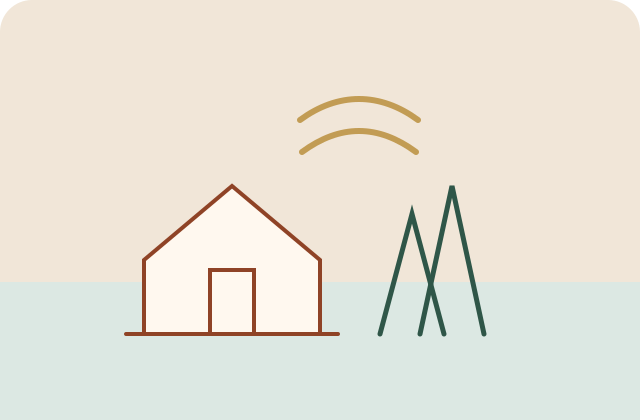
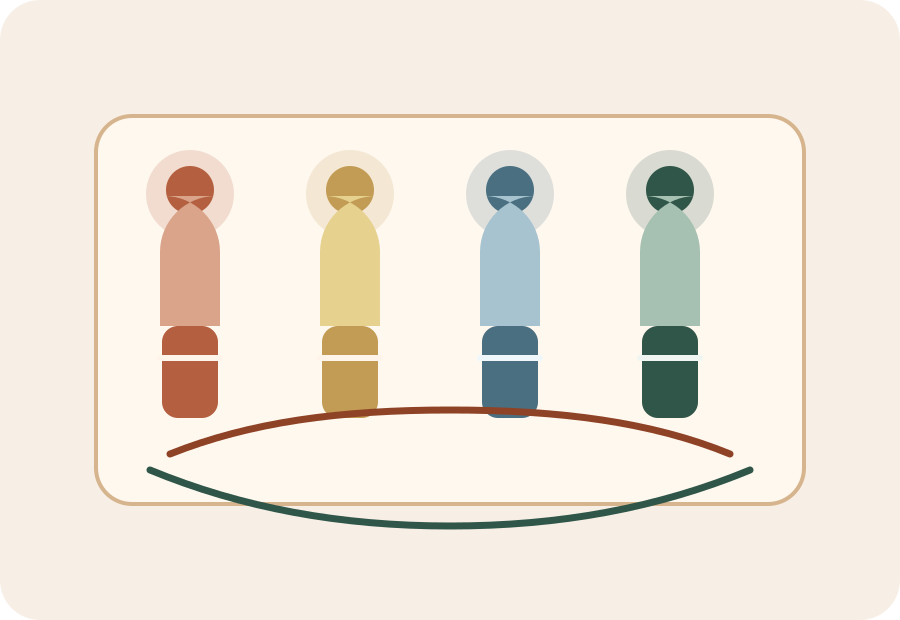
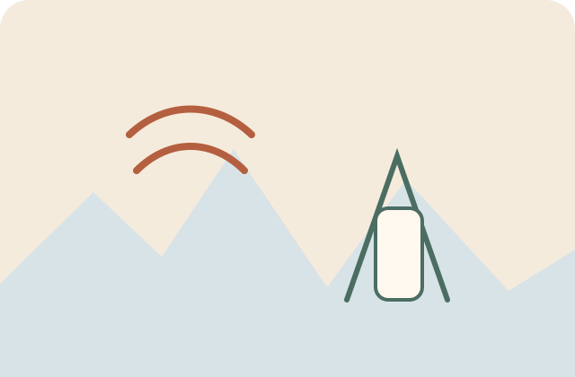

Север
Северная культура тяготеет к дереву, спокойному орнаменту и созерцательному ритму жизни.
Раздел 1
Здесь собраны восемь культурных маршрутов из разных частей страны. Они помогают увидеть, как климат, история, образ жизни и коллективная память влияют на дом, одежду, музыку, праздник, кухню и художественный язык народа.

Галерея народов
Эта подборка не охватывает все народы России, но дает широкое представление о том, как по-разному может выглядеть культурная память в разных природных и исторических условиях.
Визуальная галерея

Северная культура тяготеет к дереву, спокойному орнаменту и созерцательному ритму жизни.
Поволжье особенно ярко показывает, как праздники, ремесло и городская культура сосуществуют рядом.

Горный пейзаж формирует архитектуру, этикет, пластику танца и особое чувство достоинства.
Сибирские культуры сохраняют эпос, круговой танец, металлическое искусство и богатую цветовую символику.
В Арктике каждое решение связано с выживанием, поэтому красота и практичность здесь неразделимы.
Общее и различное
Сказания, песни и семейные истории помогают сохранять не только слова, но и культурные ценности.
Чум, каменная башня, северный дом или степное жилище отражают климат, маршрут жизни и представления о безопасности.
Вышивка и узор не только украшают вещь, но и становятся языком памяти, рода, солнца и защиты дома.
Через праздник культура показывает себя целиком: в песне, движении, труде, кухне и уважении к старшим.